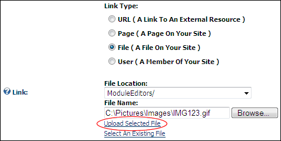

Uploading and Linking to a File
How to upload a file and then set a link to that file using the Link Control.
Users must have permission to upload files to at least one folder of the Digital Asset Management (DAM) module that is located on the Admin > File Management page. Users are granted permission to upload to their personal folder in the DAM module by default.
- At Link Type, select File ( A File On Your Site ). Note: This field may not be displayed on some modules.
- At File Location, select a folder that you have access to upload files to. When you select a folder that you have access to upload files to the Upload New File link is displayed. This will populate the File Name field below with the file in this folder. Note: The My Folder folder is your own personal folder where you can manage your personal files such as your profile image.
- At File Name, click the Upload New File link. This displays the Browse... button.
- Click the Browse... button.
- Locate and select the required file on your computer.
- Click the Uploaded Selected File link.

Uploading and Linking to a File